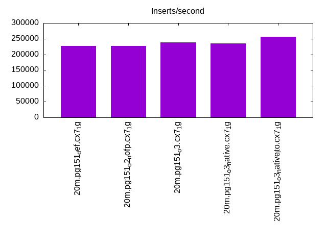
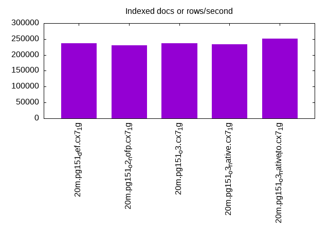
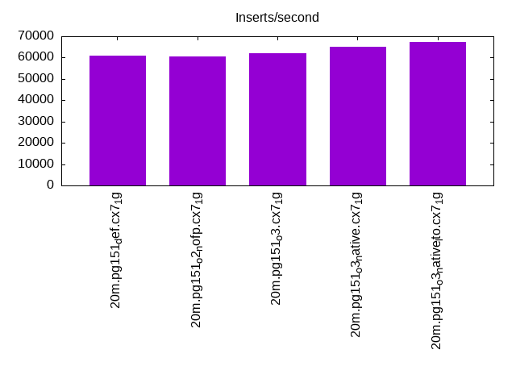
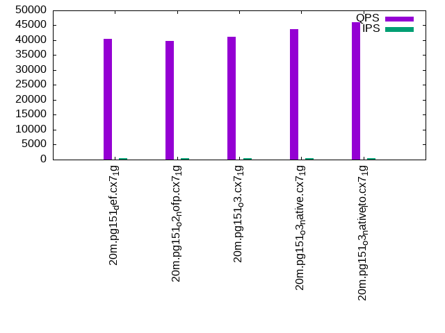
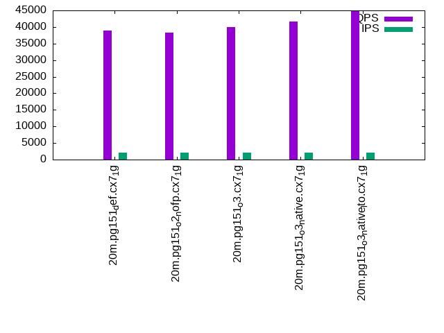
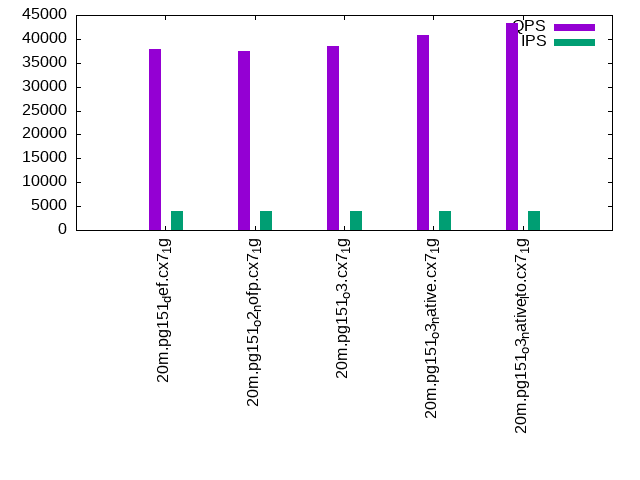

This is a report for the insert benchmark with 20M docs and 4 client(s). It is generated by scripts (bash, awk, sed) and Tufte might not be impressed. An overview of the insert benchmark is here and a short update is here. Below, by DBMS, I mean DBMS+version.config. An example is my8020.c10b40 where my means MySQL, 8020 is version 8.0.20 and c10b40 is the name for the configuration file.
The test server has 8 AMD cores, 16G RAM and an NVMe SSD. It is described here as the Beelink. The benchmark was run with 4 clients and there were 1 or 2 connections per client (1 for queries, 1 for inserts). It uses 1 table. It loads 20M rows without secondary indexes, creates secondary indexes, loads another 20M rows then does 3 read+write tests for one hour each that do queries as fast as possible with 100, 500 and then 1000 writes/second/client concurrent with the queries. The database is cached by the OS but not by the database. Clients and the DBMS share one server. The per-database configs are in the per-database subdirectories here.
The tested DBMS are:
The numbers are inserts/s for l.i0 and l.i1, indexed docs (or rows) /s for l.x and queries/s for q*.2. The values are the average rate over the entire test for inserts (IPS) and queries (QPS). The range of values for IPS and QPS is split into 3 parts: bottom 25%, middle 50%, top 25%. Values in the bottom 25% have a red background, values in the top 25% have a green background and values in the middle have no color. A gray background is used for values that can be ignored because the DBMS did not sustain the target insert rate. Red backgrounds are not used when the minimum value is within 80% of the max value.
| dbms | l.i0 | l.x | l.i1 | q100.1 | q500.1 | q1000.1 |
|---|---|---|---|---|---|---|
| 20m.pg151_def.cx7_1g | 227273 | 236470 | 60976 | 40576 | 39003 | 37945 |
| 20m.pg151_o2_nofp.cx7_1g | 227273 | 231034 | 60606 | 39753 | 38341 | 37448 |
| 20m.pg151_o3.cx7_1g | 238095 | 236470 | 62112 | 41236 | 39877 | 38520 |
| 20m.pg151_o3_native.cx7_1g | 235294 | 233721 | 65146 | 43805 | 41724 | 40724 |
| 20m.pg151_o3_native_lto.cx7_1g | 256410 | 251250 | 67340 | 46148 | 44768 | 43267 |
This table has relative throughput, throughput for the DBMS relative to the DBMS in the first line, using the absolute throughput from the previous table.
| dbms | l.i0 | l.x | l.i1 | q100.1 | q500.1 | q1000.1 |
|---|---|---|---|---|---|---|
| 20m.pg151_def.cx7_1g | 1.00 | 1.00 | 1.00 | 1.00 | 1.00 | 1.00 |
| 20m.pg151_o2_nofp.cx7_1g | 1.00 | 0.98 | 0.99 | 0.98 | 0.98 | 0.99 |
| 20m.pg151_o3.cx7_1g | 1.05 | 1.00 | 1.02 | 1.02 | 1.02 | 1.02 |
| 20m.pg151_o3_native.cx7_1g | 1.04 | 0.99 | 1.07 | 1.08 | 1.07 | 1.07 |
| 20m.pg151_o3_native_lto.cx7_1g | 1.13 | 1.06 | 1.10 | 1.14 | 1.15 | 1.14 |
This lists the average rate of inserts/s for the tests that do inserts concurrent with queries. For such tests the query rate is listed in the table above. The read+write tests are setup so that the insert rate should match the target rate every second. Cells that are not at least 95% of the target have a red background to indicate a failure to satisfy the target.
| dbms | q100.1 | q500.1 | q1000.1 |
|---|---|---|---|
| pg151_def.cx7_1g | 399 | 1994 | 3989 |
| pg151_o2_nofp.cx7_1g | 399 | 1994 | 3989 |
| pg151_o3.cx7_1g | 399 | 1994 | 3987 |
| pg151_o3_native.cx7_1g | 399 | 1994 | 3987 |
| pg151_o3_native_lto.cx7_1g | 399 | 1994 | 3989 |
| target | 400 | 2000 | 4000 |
l.i0: load without secondary indexes. Graphs for performance per 1-second interval are here.
Average throughput:
Insert response time histogram: each cell has the percentage of responses that take <= the time in the header and max is the max response time in seconds. For the max column values in the top 25% of the range have a red background and in the bottom 25% of the range have a green background. The red background is not used when the min value is within 80% of the max value.
| dbms | 256us | 1ms | 4ms | 16ms | 64ms | 256ms | 1s | 4s | 16s | gt | max |
|---|---|---|---|---|---|---|---|---|---|---|---|
| pg151_def.cx7_1g | 99.934 | 0.066 | 0.010 | ||||||||
| pg151_o2_nofp.cx7_1g | 99.930 | 0.069 | 0.011 | ||||||||
| pg151_o3.cx7_1g | 99.934 | 0.066 | 0.014 | ||||||||
| pg151_o3_native.cx7_1g | 99.944 | 0.056 | 0.014 | ||||||||
| pg151_o3_native_lto.cx7_1g | 0.006 | 99.924 | 0.070 | 0.010 |
Performance metrics for the DBMS listed above. Some are normalized by throughput, others are not. Legend for results is here.
ips qps rps rmbps wps wmbps rpq rkbpq wpi wkbpi csps cpups cspq cpupq dbgb1 dbgb2 rss maxop p50 p99 tag 227273 0 0 0.0 365.6 114.9 0.000 0.000 0.002 0.518 24946 70.5 0.110 25 2.1 5.6 0.0 0.010 66228 11792 20m.pg151_def.cx7_1g 227273 0 0 0.0 365.3 115.1 0.000 0.000 0.002 0.518 25323 70.6 0.111 25 2.1 5.6 0.0 0.011 66129 52771 20m.pg151_o2_nofp.cx7_1g 238095 0 0 0.0 378.5 120.7 0.000 0.000 0.002 0.519 25949 70.1 0.109 24 2.1 5.6 0.0 0.014 69922 11987 20m.pg151_o3.cx7_1g 235294 0 0 0.0 373.6 116.9 0.000 0.000 0.002 0.509 25135 68.5 0.107 23 2.1 5.6 0.0 0.014 69126 59054 20m.pg151_o3_native.cx7_1g 256410 0 0 0.0 400.6 130.0 0.000 0.000 0.002 0.519 27580 69.7 0.108 22 2.1 5.6 0.0 0.010 75318 66728 20m.pg151_o3_native_lto.cx7_1g
l.x: create secondary indexes.
Average throughput:
Performance metrics for the DBMS listed above. Some are normalized by throughput, others are not. Legend for results is here.
ips qps rps rmbps wps wmbps rpq rkbpq wpi wkbpi csps cpups cspq cpupq dbgb1 dbgb2 rss maxop p50 p99 tag 236470 0 0 0.0 169.1 71.5 0.000 0.000 0.001 0.309 699 12.7 0.003 4 3.9 9.0 0.0 0.003 NA NA 20m.pg151_def.cx7_1g 231034 0 0 0.0 154.9 65.0 0.000 0.000 0.001 0.288 728 12.7 0.003 4 3.9 9.0 0.0 0.003 NA NA 20m.pg151_o2_nofp.cx7_1g 236470 0 0 0.0 162.6 71.1 0.000 0.000 0.001 0.308 781 12.5 0.003 4 3.9 9.0 0.0 0.003 NA NA 20m.pg151_o3.cx7_1g 233721 0 0 0.0 161.2 70.5 0.000 0.000 0.001 0.309 742 12.6 0.003 4 3.9 9.0 0.0 0.003 NA NA 20m.pg151_o3_native.cx7_1g 251250 0 0 0.0 148.0 63.6 0.000 0.000 0.001 0.259 785 12.7 0.003 4 3.9 9.0 0.0 0.003 NA NA 20m.pg151_o3_native_lto.cx7_1g
l.i1: continue load after secondary indexes created. Graphs for performance per 1-second interval are here.
Average throughput:
Insert response time histogram: each cell has the percentage of responses that take <= the time in the header and max is the max response time in seconds. For the max column values in the top 25% of the range have a red background and in the bottom 25% of the range have a green background. The red background is not used when the min value is within 80% of the max value.
| dbms | 256us | 1ms | 4ms | 16ms | 64ms | 256ms | 1s | 4s | 16s | gt | max |
|---|---|---|---|---|---|---|---|---|---|---|---|
| pg151_def.cx7_1g | 95.681 | 4.257 | 0.062 | 0.054 | |||||||
| pg151_o2_nofp.cx7_1g | 95.611 | 4.331 | 0.058 | 0.048 | |||||||
| pg151_o3.cx7_1g | 96.602 | 3.335 | 0.063 | 0.053 | |||||||
| pg151_o3_native.cx7_1g | 97.692 | 2.236 | 0.072 | 0.060 | |||||||
| pg151_o3_native_lto.cx7_1g | 98.053 | 1.865 | 0.081 | 0.001 | 0.072 |
Performance metrics for the DBMS listed above. Some are normalized by throughput, others are not. Legend for results is here.
ips qps rps rmbps wps wmbps rpq rkbpq wpi wkbpi csps cpups cspq cpupq dbgb1 dbgb2 rss maxop p50 p99 tag 60976 0 165 2.9 41606.5 775.9 0.003 0.049 0.682 13.030 34378 62.0 0.564 81 8.6 25.7 0.0 0.054 15533 6842 20m.pg151_def.cx7_1g 60606 0 164 2.9 41563.4 774.6 0.003 0.049 0.686 13.088 34122 62.2 0.563 82 8.6 25.7 0.0 0.048 15444 8945 20m.pg151_o2_nofp.cx7_1g 62112 0 156 1.1 41668.9 783.6 0.003 0.018 0.671 12.919 35260 62.1 0.568 80 8.6 25.1 0.0 0.053 15783 6395 20m.pg151_o3.cx7_1g 65146 0 171 1.2 43146.6 821.5 0.003 0.019 0.662 12.912 39306 62.5 0.603 77 8.6 25.2 0.0 0.060 16788 8540 20m.pg151_o3_native.cx7_1g 67340 0 183 1.3 43608.3 846.1 0.003 0.019 0.648 12.866 41067 62.8 0.610 75 8.6 25.3 0.0 0.072 17281 8145 20m.pg151_o3_native_lto.cx7_1g
q100.1: range queries with 100 insert/s per client. Graphs for performance per 1-second interval are here.
Average throughput:
Query response time histogram: each cell has the percentage of responses that take <= the time in the header and max is the max response time in seconds. For max values in the top 25% of the range have a red background and in the bottom 25% of the range have a green background. The red background is not used when the min value is within 80% of the max value.
| dbms | 256us | 1ms | 4ms | 16ms | 64ms | 256ms | 1s | 4s | 16s | gt | max |
|---|---|---|---|---|---|---|---|---|---|---|---|
| pg151_def.cx7_1g | 99.975 | 0.019 | 0.006 | nonzero | 0.009 | ||||||
| pg151_o2_nofp.cx7_1g | 99.973 | 0.020 | 0.006 | nonzero | 0.009 | ||||||
| pg151_o3.cx7_1g | 99.976 | 0.017 | 0.006 | nonzero | 0.012 | ||||||
| pg151_o3_native.cx7_1g | 99.982 | 0.012 | 0.005 | nonzero | 0.009 | ||||||
| pg151_o3_native_lto.cx7_1g | 99.984 | 0.010 | 0.006 | nonzero | 0.014 |
Insert response time histogram: each cell has the percentage of responses that take <= the time in the header and max is the max response time in seconds. For max values in the top 25% of the range have a red background and in the bottom 25% of the range have a green background. The red background is not used when the min value is within 80% of the max value.
| dbms | 256us | 1ms | 4ms | 16ms | 64ms | 256ms | 1s | 4s | 16s | gt | max |
|---|---|---|---|---|---|---|---|---|---|---|---|
| pg151_def.cx7_1g | 99.354 | 0.646 | 0.012 | ||||||||
| pg151_o2_nofp.cx7_1g | 99.493 | 0.507 | 0.014 | ||||||||
| pg151_o3.cx7_1g | 98.812 | 1.188 | 0.012 | ||||||||
| pg151_o3_native.cx7_1g | 99.389 | 0.611 | 0.012 | ||||||||
| pg151_o3_native_lto.cx7_1g | 99.396 | 0.604 | 0.010 |
Performance metrics for the DBMS listed above. Some are normalized by throughput, others are not. Legend for results is here.
ips qps rps rmbps wps wmbps rpq rkbpq wpi wkbpi csps cpups cspq cpupq dbgb1 dbgb2 rss maxop p50 p99 tag 399 40576 6 0.0 1292.7 15.4 0.000 0.001 3.241 39.607 154730 50.5 3.813 100 8.7 21.7 0.0 0.009 10341 8599 20m.pg151_def.cx7_1g 399 39753 6 0.0 1272.5 15.2 0.000 0.001 3.191 38.957 151619 50.5 3.814 102 8.7 21.6 0.0 0.009 10133 8359 20m.pg151_o2_nofp.cx7_1g 399 41236 7 0.0 1251.8 14.9 0.000 0.001 3.139 38.190 157247 50.5 3.813 98 8.7 21.8 0.0 0.012 10453 8503 20m.pg151_o3.cx7_1g 399 43805 7 0.0 1258.1 15.1 0.000 0.001 3.155 38.888 167061 50.6 3.814 92 8.7 21.9 0.0 0.009 11044 9366 20m.pg151_o3_native.cx7_1g 399 46148 2 0.0 1259.9 15.1 0.000 0.000 3.159 38.887 175956 50.6 3.813 88 8.7 22.5 0.0 0.014 11507 10041 20m.pg151_o3_native_lto.cx7_1g
q500.1: range queries with 500 insert/s per client. Graphs for performance per 1-second interval are here.
Average throughput:
Query response time histogram: each cell has the percentage of responses that take <= the time in the header and max is the max response time in seconds. For max values in the top 25% of the range have a red background and in the bottom 25% of the range have a green background. The red background is not used when the min value is within 80% of the max value.
| dbms | 256us | 1ms | 4ms | 16ms | 64ms | 256ms | 1s | 4s | 16s | gt | max |
|---|---|---|---|---|---|---|---|---|---|---|---|
| pg151_def.cx7_1g | 99.932 | 0.047 | 0.020 | 0.002 | nonzero | 0.018 | |||||
| pg151_o2_nofp.cx7_1g | 99.928 | 0.050 | 0.021 | 0.002 | nonzero | 0.019 | |||||
| pg151_o3.cx7_1g | 99.931 | 0.046 | 0.021 | 0.002 | nonzero | 0.019 | |||||
| pg151_o3_native.cx7_1g | 99.941 | 0.038 | 0.020 | 0.002 | 0.014 | ||||||
| pg151_o3_native_lto.cx7_1g | 99.944 | 0.035 | 0.019 | 0.002 | 0.015 |
Insert response time histogram: each cell has the percentage of responses that take <= the time in the header and max is the max response time in seconds. For max values in the top 25% of the range have a red background and in the bottom 25% of the range have a green background. The red background is not used when the min value is within 80% of the max value.
| dbms | 256us | 1ms | 4ms | 16ms | 64ms | 256ms | 1s | 4s | 16s | gt | max |
|---|---|---|---|---|---|---|---|---|---|---|---|
| pg151_def.cx7_1g | 95.453 | 4.501 | 0.046 | 0.024 | |||||||
| pg151_o2_nofp.cx7_1g | 93.592 | 6.338 | 0.071 | 0.034 | |||||||
| pg151_o3.cx7_1g | 90.138 | 9.751 | 0.111 | 0.028 | |||||||
| pg151_o3_native.cx7_1g | 93.388 | 6.528 | 0.085 | 0.032 | |||||||
| pg151_o3_native_lto.cx7_1g | 90.378 | 9.540 | 0.082 | 0.025 |
Performance metrics for the DBMS listed above. Some are normalized by throughput, others are not. Legend for results is here.
ips qps rps rmbps wps wmbps rpq rkbpq wpi wkbpi csps cpups cspq cpupq dbgb1 dbgb2 rss maxop p50 p99 tag 1994 39003 30 0.2 5723.5 54.8 0.001 0.006 2.870 28.155 147288 52.2 3.776 107 10.2 19.6 0.0 0.018 9861 8346 20m.pg151_def.cx7_1g 1994 38341 30 0.2 5716.5 54.8 0.001 0.006 2.866 28.124 144737 52.1 3.775 109 10.2 19.6 0.0 0.019 9701 7927 20m.pg151_o2_nofp.cx7_1g 1994 39877 33 0.3 5728.3 54.9 0.001 0.007 2.872 28.190 150632 52.1 3.777 105 10.2 19.7 0.0 0.019 9957 8247 20m.pg151_o3.cx7_1g 1994 41724 33 0.3 5744.5 55.1 0.001 0.006 2.880 28.275 157792 52.1 3.782 100 10.2 19.8 0.0 0.014 10532 8774 20m.pg151_o3_native.cx7_1g 1994 44768 33 0.3 5763.8 55.3 0.001 0.006 2.890 28.389 169390 52.0 3.784 93 10.2 20.1 0.0 0.015 11268 9558 20m.pg151_o3_native_lto.cx7_1g
q1000.1: range queries with 1000 insert/s per client. Graphs for performance per 1-second interval are here.
Average throughput:
Query response time histogram: each cell has the percentage of responses that take <= the time in the header and max is the max response time in seconds. For max values in the top 25% of the range have a red background and in the bottom 25% of the range have a green background. The red background is not used when the min value is within 80% of the max value.
| dbms | 256us | 1ms | 4ms | 16ms | 64ms | 256ms | 1s | 4s | 16s | gt | max |
|---|---|---|---|---|---|---|---|---|---|---|---|
| pg151_def.cx7_1g | 99.873 | 0.095 | 0.029 | 0.003 | nonzero | 0.021 | |||||
| pg151_o2_nofp.cx7_1g | 99.869 | 0.099 | 0.030 | 0.003 | nonzero | 0.019 | |||||
| pg151_o3.cx7_1g | 99.876 | 0.091 | 0.030 | 0.003 | nonzero | 0.025 | |||||
| pg151_o3_native.cx7_1g | 99.889 | 0.081 | 0.028 | 0.002 | nonzero | 0.020 | |||||
| pg151_o3_native_lto.cx7_1g | 99.899 | 0.072 | 0.027 | 0.002 | nonzero | 0.022 |
Insert response time histogram: each cell has the percentage of responses that take <= the time in the header and max is the max response time in seconds. For max values in the top 25% of the range have a red background and in the bottom 25% of the range have a green background. The red background is not used when the min value is within 80% of the max value.
| dbms | 256us | 1ms | 4ms | 16ms | 64ms | 256ms | 1s | 4s | 16s | gt | max |
|---|---|---|---|---|---|---|---|---|---|---|---|
| pg151_def.cx7_1g | 91.151 | 8.759 | 0.090 | 0.028 | |||||||
| pg151_o2_nofp.cx7_1g | 88.941 | 10.942 | 0.117 | 0.031 | |||||||
| pg151_o3.cx7_1g | 88.561 | 11.298 | 0.141 | 0.032 | |||||||
| pg151_o3_native.cx7_1g | 93.819 | 6.112 | 0.069 | 0.027 | |||||||
| pg151_o3_native_lto.cx7_1g | 93.674 | 6.260 | 0.067 | 0.025 |
Performance metrics for the DBMS listed above. Some are normalized by throughput, others are not. Legend for results is here.
ips qps rps rmbps wps wmbps rpq rkbpq wpi wkbpi csps cpups cspq cpupq dbgb1 dbgb2 rss maxop p50 p99 tag 3989 37945 49 0.4 11318.2 99.8 0.001 0.011 2.837 25.623 140572 54.4 3.705 115 12.6 20.8 0.0 0.021 9478 8071 20m.pg151_def.cx7_1g 3989 37448 49 0.4 11311.0 99.8 0.001 0.011 2.836 25.610 138657 54.3 3.703 116 12.6 20.8 0.0 0.019 9477 8007 20m.pg151_o2_nofp.cx7_1g 3987 38520 47 0.4 11328.3 99.9 0.001 0.011 2.842 25.662 142873 54.4 3.709 113 12.6 20.8 0.0 0.025 9702 8023 20m.pg151_o3.cx7_1g 3987 40724 47 0.4 11358.1 100.1 0.001 0.011 2.849 25.722 151739 54.1 3.726 106 12.6 20.9 0.0 0.020 10213 8679 20m.pg151_o3_native.cx7_1g 3989 43267 62 0.5 11387.0 100.4 0.001 0.013 2.855 25.776 161362 53.9 3.729 100 12.6 21.0 0.0 0.022 10805 9494 20m.pg151_o3_native_lto.cx7_1g
l.i0: load without secondary indexes
Performance metrics for all DBMS, not just the ones listed above. Some are normalized by throughput, others are not. Legend for results is here.
ips qps rps rmbps wps wmbps rpq rkbpq wpi wkbpi csps cpups cspq cpupq dbgb1 dbgb2 rss maxop p50 p99 tag 227273 0 0 0.0 365.6 114.9 0.000 0.000 0.002 0.518 24946 70.5 0.110 25 2.1 5.6 0.0 0.010 66228 11792 20m.pg151_def.cx7_1g 227273 0 0 0.0 365.3 115.1 0.000 0.000 0.002 0.518 25323 70.6 0.111 25 2.1 5.6 0.0 0.011 66129 52771 20m.pg151_o2_nofp.cx7_1g 238095 0 0 0.0 378.5 120.7 0.000 0.000 0.002 0.519 25949 70.1 0.109 24 2.1 5.6 0.0 0.014 69922 11987 20m.pg151_o3.cx7_1g 235294 0 0 0.0 373.6 116.9 0.000 0.000 0.002 0.509 25135 68.5 0.107 23 2.1 5.6 0.0 0.014 69126 59054 20m.pg151_o3_native.cx7_1g 256410 0 0 0.0 400.6 130.0 0.000 0.000 0.002 0.519 27580 69.7 0.108 22 2.1 5.6 0.0 0.010 75318 66728 20m.pg151_o3_native_lto.cx7_1g
l.x: create secondary indexes
Performance metrics for all DBMS, not just the ones listed above. Some are normalized by throughput, others are not. Legend for results is here.
ips qps rps rmbps wps wmbps rpq rkbpq wpi wkbpi csps cpups cspq cpupq dbgb1 dbgb2 rss maxop p50 p99 tag 236470 0 0 0.0 169.1 71.5 0.000 0.000 0.001 0.309 699 12.7 0.003 4 3.9 9.0 0.0 0.003 NA NA 20m.pg151_def.cx7_1g 231034 0 0 0.0 154.9 65.0 0.000 0.000 0.001 0.288 728 12.7 0.003 4 3.9 9.0 0.0 0.003 NA NA 20m.pg151_o2_nofp.cx7_1g 236470 0 0 0.0 162.6 71.1 0.000 0.000 0.001 0.308 781 12.5 0.003 4 3.9 9.0 0.0 0.003 NA NA 20m.pg151_o3.cx7_1g 233721 0 0 0.0 161.2 70.5 0.000 0.000 0.001 0.309 742 12.6 0.003 4 3.9 9.0 0.0 0.003 NA NA 20m.pg151_o3_native.cx7_1g 251250 0 0 0.0 148.0 63.6 0.000 0.000 0.001 0.259 785 12.7 0.003 4 3.9 9.0 0.0 0.003 NA NA 20m.pg151_o3_native_lto.cx7_1g
l.i1: continue load after secondary indexes created
Performance metrics for all DBMS, not just the ones listed above. Some are normalized by throughput, others are not. Legend for results is here.
ips qps rps rmbps wps wmbps rpq rkbpq wpi wkbpi csps cpups cspq cpupq dbgb1 dbgb2 rss maxop p50 p99 tag 60976 0 165 2.9 41606.5 775.9 0.003 0.049 0.682 13.030 34378 62.0 0.564 81 8.6 25.7 0.0 0.054 15533 6842 20m.pg151_def.cx7_1g 60606 0 164 2.9 41563.4 774.6 0.003 0.049 0.686 13.088 34122 62.2 0.563 82 8.6 25.7 0.0 0.048 15444 8945 20m.pg151_o2_nofp.cx7_1g 62112 0 156 1.1 41668.9 783.6 0.003 0.018 0.671 12.919 35260 62.1 0.568 80 8.6 25.1 0.0 0.053 15783 6395 20m.pg151_o3.cx7_1g 65146 0 171 1.2 43146.6 821.5 0.003 0.019 0.662 12.912 39306 62.5 0.603 77 8.6 25.2 0.0 0.060 16788 8540 20m.pg151_o3_native.cx7_1g 67340 0 183 1.3 43608.3 846.1 0.003 0.019 0.648 12.866 41067 62.8 0.610 75 8.6 25.3 0.0 0.072 17281 8145 20m.pg151_o3_native_lto.cx7_1g
q100.1: range queries with 100 insert/s per client
Performance metrics for all DBMS, not just the ones listed above. Some are normalized by throughput, others are not. Legend for results is here.
ips qps rps rmbps wps wmbps rpq rkbpq wpi wkbpi csps cpups cspq cpupq dbgb1 dbgb2 rss maxop p50 p99 tag 399 40576 6 0.0 1292.7 15.4 0.000 0.001 3.241 39.607 154730 50.5 3.813 100 8.7 21.7 0.0 0.009 10341 8599 20m.pg151_def.cx7_1g 399 39753 6 0.0 1272.5 15.2 0.000 0.001 3.191 38.957 151619 50.5 3.814 102 8.7 21.6 0.0 0.009 10133 8359 20m.pg151_o2_nofp.cx7_1g 399 41236 7 0.0 1251.8 14.9 0.000 0.001 3.139 38.190 157247 50.5 3.813 98 8.7 21.8 0.0 0.012 10453 8503 20m.pg151_o3.cx7_1g 399 43805 7 0.0 1258.1 15.1 0.000 0.001 3.155 38.888 167061 50.6 3.814 92 8.7 21.9 0.0 0.009 11044 9366 20m.pg151_o3_native.cx7_1g 399 46148 2 0.0 1259.9 15.1 0.000 0.000 3.159 38.887 175956 50.6 3.813 88 8.7 22.5 0.0 0.014 11507 10041 20m.pg151_o3_native_lto.cx7_1g
q500.1: range queries with 500 insert/s per client
Performance metrics for all DBMS, not just the ones listed above. Some are normalized by throughput, others are not. Legend for results is here.
ips qps rps rmbps wps wmbps rpq rkbpq wpi wkbpi csps cpups cspq cpupq dbgb1 dbgb2 rss maxop p50 p99 tag 1994 39003 30 0.2 5723.5 54.8 0.001 0.006 2.870 28.155 147288 52.2 3.776 107 10.2 19.6 0.0 0.018 9861 8346 20m.pg151_def.cx7_1g 1994 38341 30 0.2 5716.5 54.8 0.001 0.006 2.866 28.124 144737 52.1 3.775 109 10.2 19.6 0.0 0.019 9701 7927 20m.pg151_o2_nofp.cx7_1g 1994 39877 33 0.3 5728.3 54.9 0.001 0.007 2.872 28.190 150632 52.1 3.777 105 10.2 19.7 0.0 0.019 9957 8247 20m.pg151_o3.cx7_1g 1994 41724 33 0.3 5744.5 55.1 0.001 0.006 2.880 28.275 157792 52.1 3.782 100 10.2 19.8 0.0 0.014 10532 8774 20m.pg151_o3_native.cx7_1g 1994 44768 33 0.3 5763.8 55.3 0.001 0.006 2.890 28.389 169390 52.0 3.784 93 10.2 20.1 0.0 0.015 11268 9558 20m.pg151_o3_native_lto.cx7_1g
q1000.1: range queries with 1000 insert/s per client
Performance metrics for all DBMS, not just the ones listed above. Some are normalized by throughput, others are not. Legend for results is here.
ips qps rps rmbps wps wmbps rpq rkbpq wpi wkbpi csps cpups cspq cpupq dbgb1 dbgb2 rss maxop p50 p99 tag 3989 37945 49 0.4 11318.2 99.8 0.001 0.011 2.837 25.623 140572 54.4 3.705 115 12.6 20.8 0.0 0.021 9478 8071 20m.pg151_def.cx7_1g 3989 37448 49 0.4 11311.0 99.8 0.001 0.011 2.836 25.610 138657 54.3 3.703 116 12.6 20.8 0.0 0.019 9477 8007 20m.pg151_o2_nofp.cx7_1g 3987 38520 47 0.4 11328.3 99.9 0.001 0.011 2.842 25.662 142873 54.4 3.709 113 12.6 20.8 0.0 0.025 9702 8023 20m.pg151_o3.cx7_1g 3987 40724 47 0.4 11358.1 100.1 0.001 0.011 2.849 25.722 151739 54.1 3.726 106 12.6 20.9 0.0 0.020 10213 8679 20m.pg151_o3_native.cx7_1g 3989 43267 62 0.5 11387.0 100.4 0.001 0.013 2.855 25.776 161362 53.9 3.729 100 12.6 21.0 0.0 0.022 10805 9494 20m.pg151_o3_native_lto.cx7_1g
Insert response time histogram
256us 1ms 4ms 16ms 64ms 256ms 1s 4s 16s gt max tag 0.000 0.000 99.934 0.066 0.000 0.000 0.000 0.000 0.000 0.000 0.010 pg151_def.cx7_1g 0.000 0.000 99.930 0.069 0.000 0.000 0.000 0.000 0.000 0.000 0.011 pg151_o2_nofp.cx7_1g 0.000 0.000 99.934 0.066 0.000 0.000 0.000 0.000 0.000 0.000 0.014 pg151_o3.cx7_1g 0.000 0.000 99.944 0.056 0.000 0.000 0.000 0.000 0.000 0.000 0.014 pg151_o3_native.cx7_1g 0.000 0.006 99.924 0.070 0.000 0.000 0.000 0.000 0.000 0.000 0.010 pg151_o3_native_lto.cx7_1g
TODO - determine whether there is data for create index response time
Insert response time histogram
256us 1ms 4ms 16ms 64ms 256ms 1s 4s 16s gt max tag 0.000 0.000 95.681 4.257 0.062 0.000 0.000 0.000 0.000 0.000 0.054 pg151_def.cx7_1g 0.000 0.000 95.611 4.331 0.058 0.000 0.000 0.000 0.000 0.000 0.048 pg151_o2_nofp.cx7_1g 0.000 0.000 96.602 3.335 0.063 0.000 0.000 0.000 0.000 0.000 0.053 pg151_o3.cx7_1g 0.000 0.000 97.692 2.236 0.072 0.000 0.000 0.000 0.000 0.000 0.060 pg151_o3_native.cx7_1g 0.000 0.000 98.053 1.865 0.081 0.001 0.000 0.000 0.000 0.000 0.072 pg151_o3_native_lto.cx7_1g
Query response time histogram
256us 1ms 4ms 16ms 64ms 256ms 1s 4s 16s gt max tag 99.975 0.019 0.006 nonzero 0.000 0.000 0.000 0.000 0.000 0.000 0.009 pg151_def.cx7_1g 99.973 0.020 0.006 nonzero 0.000 0.000 0.000 0.000 0.000 0.000 0.009 pg151_o2_nofp.cx7_1g 99.976 0.017 0.006 nonzero 0.000 0.000 0.000 0.000 0.000 0.000 0.012 pg151_o3.cx7_1g 99.982 0.012 0.005 nonzero 0.000 0.000 0.000 0.000 0.000 0.000 0.009 pg151_o3_native.cx7_1g 99.984 0.010 0.006 nonzero 0.000 0.000 0.000 0.000 0.000 0.000 0.014 pg151_o3_native_lto.cx7_1g
Insert response time histogram
256us 1ms 4ms 16ms 64ms 256ms 1s 4s 16s gt max tag 0.000 0.000 99.354 0.646 0.000 0.000 0.000 0.000 0.000 0.000 0.012 pg151_def.cx7_1g 0.000 0.000 99.493 0.507 0.000 0.000 0.000 0.000 0.000 0.000 0.014 pg151_o2_nofp.cx7_1g 0.000 0.000 98.812 1.188 0.000 0.000 0.000 0.000 0.000 0.000 0.012 pg151_o3.cx7_1g 0.000 0.000 99.389 0.611 0.000 0.000 0.000 0.000 0.000 0.000 0.012 pg151_o3_native.cx7_1g 0.000 0.000 99.396 0.604 0.000 0.000 0.000 0.000 0.000 0.000 0.010 pg151_o3_native_lto.cx7_1g
Query response time histogram
256us 1ms 4ms 16ms 64ms 256ms 1s 4s 16s gt max tag 99.932 0.047 0.020 0.002 nonzero 0.000 0.000 0.000 0.000 0.000 0.018 pg151_def.cx7_1g 99.928 0.050 0.021 0.002 nonzero 0.000 0.000 0.000 0.000 0.000 0.019 pg151_o2_nofp.cx7_1g 99.931 0.046 0.021 0.002 nonzero 0.000 0.000 0.000 0.000 0.000 0.019 pg151_o3.cx7_1g 99.941 0.038 0.020 0.002 0.000 0.000 0.000 0.000 0.000 0.000 0.014 pg151_o3_native.cx7_1g 99.944 0.035 0.019 0.002 0.000 0.000 0.000 0.000 0.000 0.000 0.015 pg151_o3_native_lto.cx7_1g
Insert response time histogram
256us 1ms 4ms 16ms 64ms 256ms 1s 4s 16s gt max tag 0.000 0.000 95.453 4.501 0.046 0.000 0.000 0.000 0.000 0.000 0.024 pg151_def.cx7_1g 0.000 0.000 93.592 6.338 0.071 0.000 0.000 0.000 0.000 0.000 0.034 pg151_o2_nofp.cx7_1g 0.000 0.000 90.138 9.751 0.111 0.000 0.000 0.000 0.000 0.000 0.028 pg151_o3.cx7_1g 0.000 0.000 93.388 6.528 0.085 0.000 0.000 0.000 0.000 0.000 0.032 pg151_o3_native.cx7_1g 0.000 0.000 90.378 9.540 0.082 0.000 0.000 0.000 0.000 0.000 0.025 pg151_o3_native_lto.cx7_1g
Query response time histogram
256us 1ms 4ms 16ms 64ms 256ms 1s 4s 16s gt max tag 99.873 0.095 0.029 0.003 nonzero 0.000 0.000 0.000 0.000 0.000 0.021 pg151_def.cx7_1g 99.869 0.099 0.030 0.003 nonzero 0.000 0.000 0.000 0.000 0.000 0.019 pg151_o2_nofp.cx7_1g 99.876 0.091 0.030 0.003 nonzero 0.000 0.000 0.000 0.000 0.000 0.025 pg151_o3.cx7_1g 99.889 0.081 0.028 0.002 nonzero 0.000 0.000 0.000 0.000 0.000 0.020 pg151_o3_native.cx7_1g 99.899 0.072 0.027 0.002 nonzero 0.000 0.000 0.000 0.000 0.000 0.022 pg151_o3_native_lto.cx7_1g
Insert response time histogram
256us 1ms 4ms 16ms 64ms 256ms 1s 4s 16s gt max tag 0.000 0.000 91.151 8.759 0.090 0.000 0.000 0.000 0.000 0.000 0.028 pg151_def.cx7_1g 0.000 0.000 88.941 10.942 0.117 0.000 0.000 0.000 0.000 0.000 0.031 pg151_o2_nofp.cx7_1g 0.000 0.000 88.561 11.298 0.141 0.000 0.000 0.000 0.000 0.000 0.032 pg151_o3.cx7_1g 0.000 0.000 93.819 6.112 0.069 0.000 0.000 0.000 0.000 0.000 0.027 pg151_o3_native.cx7_1g 0.000 0.000 93.674 6.260 0.067 0.000 0.000 0.000 0.000 0.000 0.025 pg151_o3_native_lto.cx7_1g